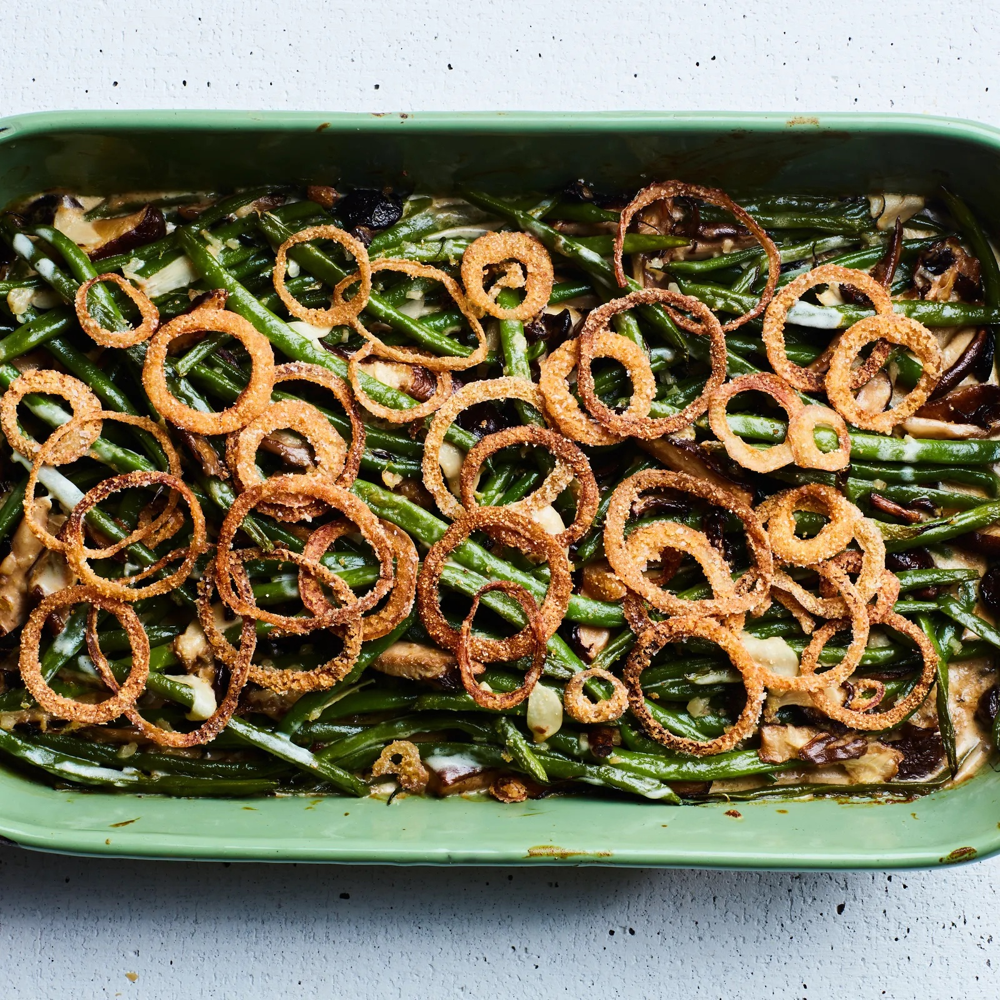

Green Bean and Mushroom Casserole

Ingredients
- 4 cups green beans (1 lb), fresh or frozen (ends chopped if fresh)
- 2 tablespoons olive oil
- 1 small onion, finely chopped
- 2 cups sliced mushrooms
- 4 cups creamy mushroom soup (one box)*
- 1/2 cup all purpose flour
- 1 teaspoon salt
- fresh black pepper
- 2 tablespoons nutritional yeast (optional)
- 2 tablespoons vegetable broth powder (optional, Frontier brand is my fave)
- 6 oz can of fried onions, divided*
Steps
- Bring a pot of water to boil for the green beans. When ready, boil for about 7 minutes then drain.
- Meanwhile, in a large pan over medium-high heat, saute onions in olive oil for about 2 minutes. Add mushrooms and saute for 7 minutes more.
- Mix the flour into the mushroom soup until very few lumps are left. Add to the pan along with the salt, peppers, and, if using, the nutritional yeast and vegetable broth powder. Stir often for about 10 minutes, until thickened.
- Preheat oven to 375. Add the green beans to the pan and use your spatula chop them up a bit into smaller pieces (roughly in half). Mix in half of the fried onions. Transfer to an oiled casserole and top with the remaining onions. Bake for 22 to 25 minutes, until browned and bubbly. For yummiest results, let cool for at least 1/2 an hour before serving.